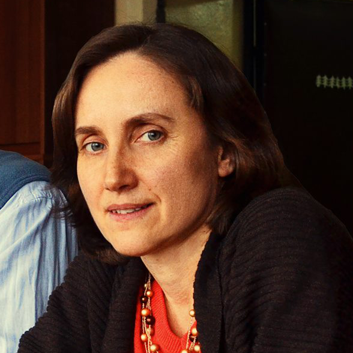

TMP 2017 Invited Speakers
Nina Romanovna SumbatovaTalk: Foundations of Nominal Classifications: From Semantics to Phonology 
Affiliation: RSUH Current Affiliation: Doctor of Philological Sciences, specialist in linguistic typology Research Interests: linguistic typology, Caucasian languages (Darginian, Adyghe, Svan), African Landuma language, morphosyntax, nominal classifications. Education and Career:
Professional Activities:
|
Olga Viktorovna FedorovaTalk: Psycholinguistic Studies of Russian Syntax Affiliation: Moscow State University Current Affiliation: Professor at the Department of Theoretical and Applied Linguistics, Moscow State University Research Interests: psycholinguistics, neurolinguistics, cognitive linguistics, discourse analysis, syntax, language acquisition. Academic Degrees and Positions:
Research Areas:
|
Boris Valerievich Orekhov (Gensling)

Affiliation: HSE University Current Affiliation: Senior Research Fellow at the Laboratory of Digital Research in Literature and Folklore, IRLI RAS Research Interests: digital humanities, computational philology, machine learning in text analysis, versification, corpus linguistics. Biography: Born in 1982 in Ufa. Candidate of Philological Sciences. Education and Career:
Professional Activities:
|
Natalia Anatolievna Slioussar (Gensling)Talk: Information Structure and the Universality: General Problems and Several Curious Cases 
Affiliation: Saint Petersburg State University / HSE University Current Affiliation: HSE University (Moscow and Saint Petersburg) Research Interests: theoretical and experimental linguistics, grammatical features and agreement, inflectional morphology in the mental lexicon, word order variation, information structure. Biography: Born in Saint Petersburg on November 16, 1980. Research Areas:
Works in theoretical and experimental linguistics at HSE University in Moscow and Saint Petersburg. |
 Talk: Verse as Text Type: Machine Learning Verification
Talk: Verse as Text Type: Machine Learning Verification